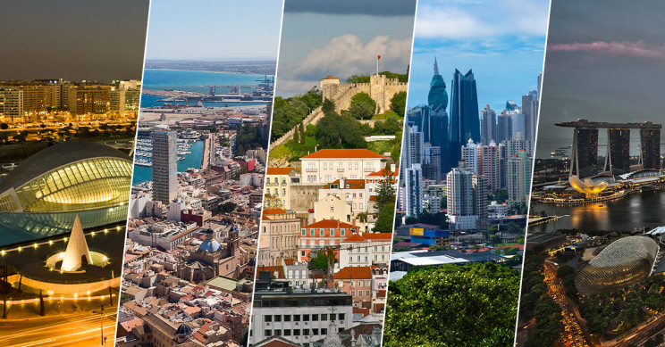

Blog de Ciudades

La diversidad cultural en las ciudades del mundo no solo es una fuente de riqueza cultural y humana, sino también un motor de desarrollo económico, innovación y cohesión social. Celebrar y promover la diversidad cultural es fundamental para construir ciudades inclusivas, dinámicas y prósperas en el siglo XXI.
La diversidad cultural enriquece el tejido social y cultural de una ciudad al exponer a sus habitantes a una variedad de tradiciones, costumbres, idiomas, gastronomía, arte y música. Esta interacción promueve el entendimiento mutuo y la apreciación de las diferencias, fomentando la tolerancia y el respeto.